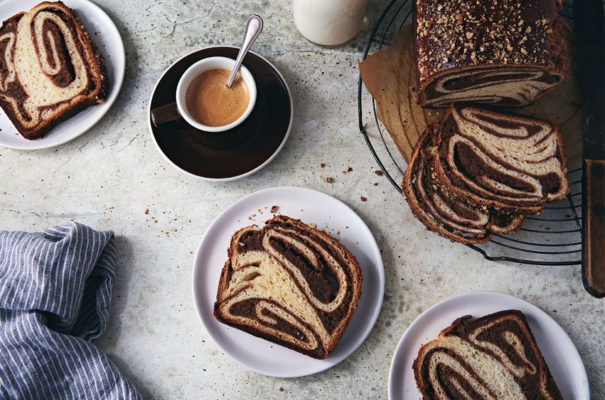

Poticia

Poticia is a traditional Slovenian bread. It is baked for special occasions, though my family makes it at Christmastime. It can be filled with your nut of choice!
Ingredients
Dough
- 4 Tablespoons unsalted butter, softened
- 1/4 cup granulated sugar
- 1 teaspoon salt
- 3/4 cup milk
- 2 large eggs
- 2 1/2 teaspoons instant yeast or active dry yeast
- 2 teaspoons vanilla extract
- 3 cups unbleached all-purpose flour
- 1/4 cup potato flour
Filling
- 4 1/2 cups nut of choice
- 3/4 cup sugar
- 2 tablespoons unbleached all-purpose flour
- 1/4 teaspoon salt
- 2 teaspoons cinnamon
- 3 large eggs
- 1/4 cup milk
- 1/4 cup maple syrup
- 1 teaspoon vanilla extract
- 2 teaspoons orange zest, optional
Topping
- 1 large egg, beaten with 2 tablesppons water
- 1/4 cup finely chopped nuts of choice
Instructions
- To make the dough: Place the butter, sugar, and salt in a large mixing bowl. Bring the milk to a simmer on the stove or in the microwave and pour over the ingredients. Stir briefly, then let the mixture cool to lukewarm.
- While the mixture is cooling, weigh your flour; or measure it by gently spooning it into a cup, then sweeping off any excess.
- When cooled, whisk in the eggs, yeast, and vanilla. Whisk about 1 cup of the all-purpose flour with the potato flour (or potato flakes) and stir into the wet ingredients. Add the remaining flour, mixing to form a soft dough.
- Knead the dough for 8 to 10 minutes, until shiny and smooth. Cover the dough and let it rise for 1 hour, then refrigerate it for at least 1 hour, and as long as overnight.
- To make the filling: Put the nuts, sugar, flour or Instant ClearJel, salt, and cinnamon in the bowl of a food processor or blender. Process in short bursts to grind the nuts.
- Put the nuts, sugar, flour or Instant ClearJel, salt, and cinnamon in the bowl of a food processor or blender. Process in short bursts to grind the nuts.
- To assemble: On a greased work surface, roll the dough into a 26" x 18" rectangle, with a long side facing you. Spread the filling evenly over the surface, leaving 1" of one long edge uncovered.
- Roll the dough toward the uncovered edge, pinching to seal the seam and the ends to enclose the filling.
- Grease two 8 1/2" x 4 1/2" loaf pans and line with parchment. Cut the rolled-up dough in half, so that you end up with two logs about 13" to 14" long.
- Working with one piece at a time, bring the ends of the log together to make a ring shape, pinching and sealing the spot where they meet to enclose the filling. Flatten the ring gently (it'll shape itself into a 6 1/2" to 7" oblong). Settle the ring into the bottom of the pan with its two sides next to one another (not on top of each other), and the original long seam facing down. Press the ring gently to spread it over the bottom and into the corners of the pan.
- Repeat with the second piece of dough and the second pan.
- Cover the loaves and let them rise until puffy, up to 1 1/2 hours. Toward the end of the rise time, preheat the oven to 350°F.
- When the loaves have risen, brush the tops with the beaten egg and sprinkle with the finely chopped nuts.
- Bake the loaves for 50 to 55 minutes. Check the tops after 20 minutes, tenting with foil if necessary to keep them from over-browning. The breads are done when the centers read 190°F when measured with a digital thermometer.
- Remove from the oven and let cool in the pans on a rack for 20 minutes before tipping out of the pans and returning to the rack to finish cooling completely.
- Store bread, well wrapped, on the counter for up to three days; freeze for longer storage.